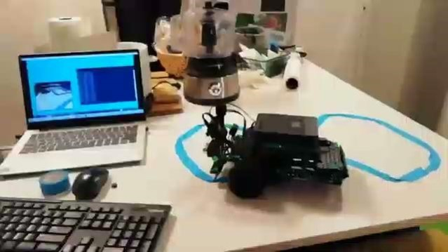

Designed and built control system for a 5-line laser imaging system.
This allows fine grained control over illumination time,
polarization and acquisition time. High frequency frame acquisition
in the 20-30 ms range. Built to facilitate live imaging FRET
experiments.
*
Optical Polymer Waveguides
Using 3D Printed Molds
Designed & 3D printed mold for creating waveguides from optical
polymers.
*
Open-loop Path Following

Wrote an open-loop path tracking algorithm for a wheeled robot
equipped with a camera. Success with sharp turns and intersecting
paths. RaspberryPi & Python scientific stack.
Demonstrated the use of a SMT solver (Z3, Microsoft Research) to
recover secret information from a pseudorandom number. Approach
demonstrated as a detector for weak RNGs in web applications.
Read the full post.
*
Hand Tracking & Landmark Estimate
ML based hand landmark estimation and real-time tracking. Laptop in
background shows an overlay of landmarks over live video. Camera
moves to keep hand in the viewfield in real-time. RPi & Python
scientific stack.